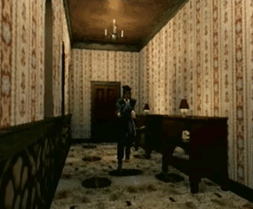
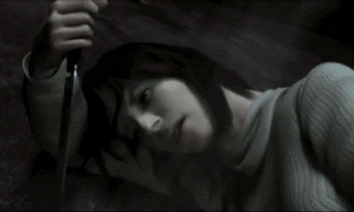
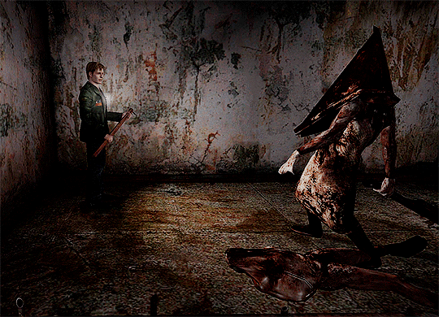
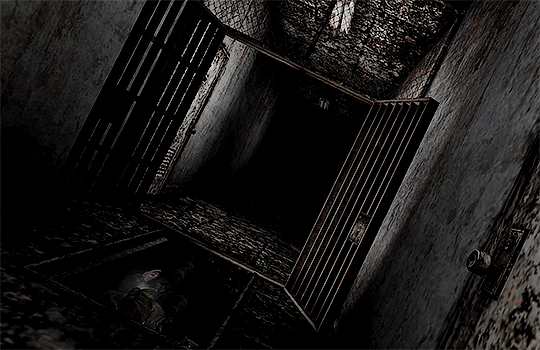
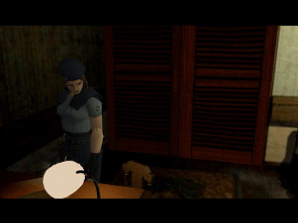
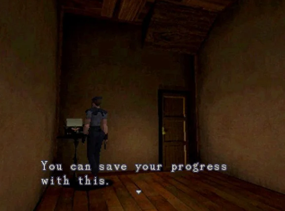
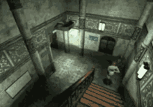
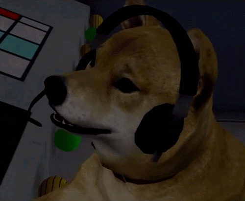

Os jogos terror feitos no final dos anos 90 e início dos anos 2000 foram muito influentes para a cena, seu impacto pode até hoje ser visto principalmente em produções independentes que tentam replicar seus estilos e atmosferas.
Plataforma: PS2
Sem relação com a narrativa do resto da franquia original, Silent Hill 2 traz uma história diferente. James Sunderland recebe uma carta de sua esposa, Mary, dizendo está-lo esperando na cidade nebulosa de Silent Hill. Um detalhe, no entando, chama a atenção de James: Sua esposa já está morta há três anos.
O objetivo do jogo é explorar a cidade na esperança de encontrar Mary, recebendo pistas de lugares onde ela possa estar, enfrentando monstros perturbadores no caminho.
Trabalhando dentro das limitações técnicas da plataforma, Silent Hill 2 implementa truques visuais que tornam possíveis gráficos impressionantes até nos dias atuais, limitando a visão e focando em detalhes diretamente à nossa frente. É de grande ajuda para o terror psicológico do jogo que ele utilize este medo do que não podemos ver, bem como o design sonoro, essenciais para sua atmosfera opressiva. Além da direção da interpretação de voz dos personagens, as cenas pré-renderizadas e expressões faciais, animadas à mão, apresentam um ar por vezes realista, e por outras anormal e não natural, o que reforça ainda mais o desconforto causado no jogador.
Plataforma: PS1
Antecedendo a série Silent Hill, mas trazendo um estilo de jogo similar, Resident Evil foca no aspecto de sobrevivência e gerenciamento de recursos do jogador, onde até ítens básicos de cura podem ser escassos de se encontrar.
A história acompanha membros de uma força tarefa que, durante uma investigação de assasinatos canibalísticos em uma floresta, é atacada por cães mutantes, tendo de se abrigar em uma mansão próxima, que se encontra infestada de zumbis.

O jogador logo descobre o quão seguro realmente está na mansão, e como cada minuto passado importa para sua sobrevivência, visto que alguns dos inimigos passam por mutações depois de imobilizados, os tornando mais difíceis de lidar.

Cada personagem do elenco principal enfrenta, na cidade, o seu próprio purgatório pessoal, ao qual podemos ter uma visão ao decorrer da história, e ao analisar suas interações, que, apesar de poucas, fazem o jogador questionar o que os traz a este lugar.

O Pyramid Head, inimigo principal do jogo, embosca o jogador em momentos onde está encurralado, dando como única opção a esquiva, já que armas não surtem efeito.

O jogador acompanha James em uma constante descida, tanto em sua mente quanto em cenários cada vez mais claustrofóbicos, sem possibilidade de voltar para trás.
-------------------------------


As salas seguras dão ao jogador a chance de organizar seus ítens, e um momento de descanso da ação constante.

Após um certo ponto, inimigos começam a aparecer de todos os cantos. O jogador deverá decidir quais inimigos evitar, e com quais gastará seus recursos como munição e querosene, usado para queimar zumbis.
